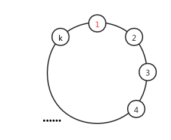

二分图
定义
二分图，又称二部图，英文名叫 Bipartite graph。
二分图的节点由两个集合组成，且两个集合内部没有边的图。
也就是说存在一种方案，将节点划分成满足以上性质的两个集合，二分图可以是非强连通的。

性质
- 如果两个集合中的点分别染成黑色和白色，可以发现二分图中的每一条边都一定是连接一个黑色点和一个白色点。
- 二分图不存在长度为奇数的环，因为每一条边都是从一个集合走到另一个集合，只有走偶数次才可能回到同一个集合。
判定
一个图是二分图当且仅当图中不含奇数环。
-> 一个不含奇数环的图就是二分图(必要性)
-> 一个二分图是一个不含奇数环的图(充分性)
证(必要性): 如上图，如果发现了一个奇环，假设节点1在左侧，由于这个图是一个二分图，则节点2一定在右侧，同理节点3在左侧；...... 因为这是一个奇环，那么节点k会在左侧，节点1在右侧，与假设矛盾。 所以一个二分图一定不含奇数环。
证(充分性): 使用染色法，任取图中的一个连通块的一个节点将其染为黑色，然后将与这个节点相邻的且还未被染色的节点染成白色，重复此操作每次将相邻的且未被染色的节点染成不同的颜色。直到将这个图中所有节点都染色。 由于这个图没有奇数环，所以一定不会出现矛盾的点，也就是不会出现两个相邻的点是同色的。 染色完毕后，整个图中的黑色的节点数一定等于白色的结点数，将白色的节点放在一个集合中，将黑色的节点放在一个集合中，这两个集合内部没有边，所以这个图是二分图。 所以一个不含奇数环的图是二分图
结论：一个图是二分图当且仅当图中不含奇数环。
所以判断一个图是否为二分图，我们可以使用 DFS（图论） 或者 BFS 来遍历这张图。如果发现了奇环，那么就不是二分图，否则是。
应用
- 二分图最大匹配
- 二分图最大权匹配
- 一般图最大匹配
- 一般图最大权匹配
解决二分图问题的算法
- 染色法
- 时间复杂度 \(O(n + m)\)
- 匈牙利算法
- 时间复杂度 \(O(nm)\)，实际运行时间远小于 \(O(nm)\)